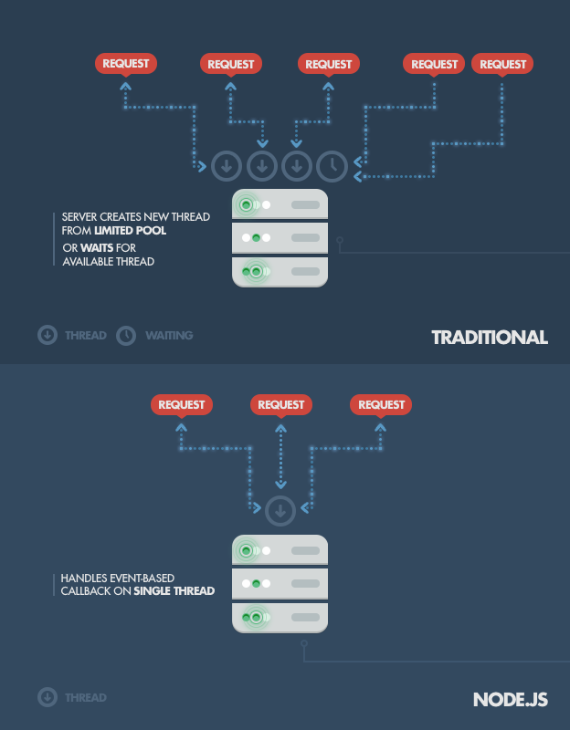

Server-side Development with Node.js

What do backend languages do?
Three examples of interactions between an app’s frontend and backend such as:
- 1. Requesting a resource from an app’s home page like a specific page
- Example: a file is served by an application’s backend server
What do backend languages do?
- 2. Storing information and saving it in a database like PostgreSQL, MySQL or MongoDB
- Example: for an online bookstore user information(name, username, favorite book categories etc..) and book information(book title, year published, price, quantity available, etc...)
What do backend languages do?
- 3. Application user authentication
- Example: Logging in with local information (username and password) and social authentication(GitHub, FB, Google, etc...)
In summary...
Helpful ArticleWhat is Node.js?
- Node.js is an open source project designed to help you write JavaScript programs that talk to networks, file systems, or other I/O (input/output, reading/writing) sources
- aka. SERVER-SIDE JAVASCRIPT!!
But what does that mean?
- Low barrier to entry - if you know Javascript, you'll learn Node in no time
- It gives you only what you need
- Great community and lots of open source node modules
- It's very fast at I/O operations

Interactions

Single Thread
Some terms!
- Event-driven
- Non-blocking
- Concurrent connections
- V8 engine
Diagram
V8 Engine

Installing Node
Go here!You will also install npm as you install node.js!
Node REPL Shell
- REPL: Read-Eval-Print Loop
- Go to your Terminal and type in `node`
- This will open an interactive node shell where you can execute any Javascript
- To exit type ctrl+c two times
> var string = 'hello';
> string
'hello'
> string + ' world'
'hello world'
Type ctrl + C to exit
More on REPL
In a REPL, the user enters one or more expressions and the REPL evaluates them and displays the results.
- The read function accepts an expression from the user, and parses it into a data structure in memory.
- The eval function takes this internal data structure and evaluates it.
- The print function takes the result yielded by eval, and prints it out to the user.
- The development environment then returns to the read state, creating a loop, which terminates when the program is closed.
Exercise
Let's write your first Node.js program. Git clone the gdi-node-class1 repository. Inside that gdi-node-class1 directory make a new file called main.js. Place this code inside.
console.log('Hello World!');
Save that file by clicking command+s and go to your Terminal. Type in the following and hit enter.
node main.js
Congrats!
You just executed your first node.js program. Now for the cool stuff.
Let's Put the I in I/O
Add a new file in your gdi-node-class1 directory called 'dinosaurs.txt'. Copy this list of awesome dinosaurs and paste it in your file: https://gist.github.com/enspencer/d9ddf51913f4841ec14f
Go back to your main.js file.
var fs = require('fs');
var cwd = process.cwd();
fs.readFile(cwd + '/dinosaurs.txt', function(err, data) {
console.log(data.toString());
});
Now go to your Terminal and run it:
node main.js
Parsing Text
Now let's turn the text into an array:
var fs = require('fs');
var cwd = process.cwd();
fs.readFile(cwd + '/dinosaurs.txt', function(err, data) {
var data = data.toString().split('\n');
console.log(data[0]);
});
And run the program again.
What did we just do?
- Used fs, one of node's core modules
- Read an external text file
- Converted the contents of that file from a Buffer to a string
What happens if we don't convert data to a string?
Try removing '.toString()' from that line and running the program again.
What the heck is a buffer?
From the node docs:
Pure JavaScript is Unicode friendly but not nice to binary data. When dealing with TCP streams or the file system, it's necessary to handle octet streams. Node.js has several strategies for manipulating, creating, and consuming octet streams.
Raw data is stored in instances of the Buffer class. A Buffer is similar to an array of integers but corresponds to a raw memory allocation outside the V8 heap.
What we care about is that a Buffer is a byte array that can be converted to a human-readable string by adding .toString()
Let's Develop It
In your main.js file, change 'dinosaurs.txt' to 'people.json' and paste the json from here: https://gist.github.com/enspencer/b58d6b190505d278b0e9
We can use the same fs.readFile function to read JSON. Remember we need to convert the Buffer to a string. This time we'll also parse that string back into JSON.
fs.readFile(cwd + '/curriculum/class1/people.json', function(err, data) {
var data = JSON.parse(data.toString());
console.log(data);
});
Parsing JSON
Now use your Javascript knowledge to select individual people in the object.
data.people
data.people[0]
Have your program return the eye color of the person at the 3rd index.
Next up: A simple HTTP server
We're going to use node's http module to create a server. Create a new file called server.js
var http = require('http');
http.createServer(function(req, res) {
res.writeHead(200, {'Content-Type': 'text/plain'});
res.end('Hello World!\n');
}).listen(9000);
console.log('Server running on port 9000');
Now run your progam again and in your browser navigate to localhost:9000
Putting it all together
This exercise combines using an HTTP server and reading files. The goal is for your server to respond with the contents of a file.
- Create a new Javascript file called file_parser.js
- Create a new text file called mytext.txt and write something fun in it
- In your JS file, create a new HTTP server and have it write some text in the response
- Instead of writing text read mytext.txt into HTTP server's response
What is Express?
- Most widely used Node.js framework
- Most applications are built with express or another framework instead of using bare Node without a framework
- Routing with HTTP request methods
- Requests and responses: Requests made to a certain route will return a page for that specific route
- Sending files
NPM
Utility for downloading packages for Node.js applications
Creating a package.json file to store dependencies using the command “NPM init” in the app directory on the command line
Can use to install front-end code, add dependencies, and build tools too!

Modules
A module is a JavaScript library/file that you can import into other code using Node's require() function. Express itself is a module, as are the middleware and database libraries that we use in our Express applications.
Modules
You will want to create your own modules, because this allows you to organise your code into managable parts — a monolithic single-file application is hard to understand and maintain. Using modules also helps you manage your namespace, because only the variables you explicitly export are imported when you use a module.
Middleware
Middleware functions are functions that have access to the request object (req), the response object (res), and the next middleware function in the application’s request-response cycle. The next middleware function is commonly denoted by a variable named next.
Middleware
Middleware functions can perform the following tasks:
- Execute any code.
- Make changes to the request and the response objects.
- End the request-response cycle.
- Call the next middleware function in the stack.
- Documentation
Review
Watch This Node Module in the Web Developer Course!Click here for Node Documentation
Resources and Exercises
- Code School, with interactive Node.js lessons to help you review
- Art of Node, by Max Ogden
- Learn You Node, another interactive intro